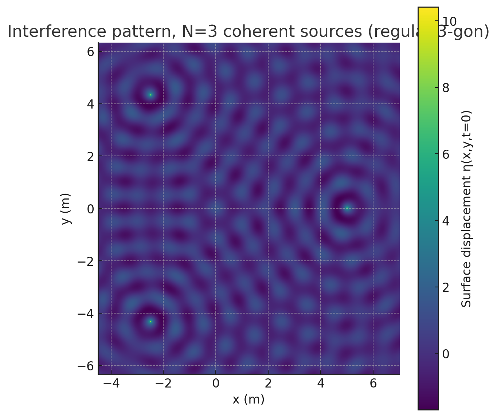

Interference Patterns from Coherent Point Sources Arranged on a Regular Polygon
Introduction
When two or more waves overlap, they add linearly: peaks can reinforce, troughs can cancel, and rich interference patterns emerge.
On a water surface, a single point disturbance radiates outward as circular ripples whose amplitude decays like \(1/\sqrt{r}\).
Placing identical (coherent) sources at the vertices of a regular polygon lets us explore how geometry dictates the symmetry of the resulting pattern.
Such studies underpin technologies from loud-speaker arrays to radio antennas — and, in the laboratory, provide a visually striking demonstration of superposition.
1 Physical Model
A source at \((x_i,y_i)\) generates
- \(A\) – common amplitude
- \(k=\tfrac{2\pi}{\lambda}\) – wave-number, \(\lambda\) wavelength
- \(\omega=2\pi f\) – angular frequency
- \(r_i\) – distance from source i to field point \((x,y)\)
- \(\phi_i\) – initial phase (here all set to zero)
Because water-surface displacements are small, linear superposition applies:
2 Theory Highlights
- Constructive interference — occurs where path-length differences satisfy
\(|\,r_i-r_j\,| = m\lambda\) with \(m\in\mathbb Z\). - Destructive interference — occurs where those differences equal
\((m+\tfrac12)\lambda\).
With more than two sources these conditions must be met simultaneously for every pair, producing a 2-D lattice of bright (antinodal) and dark (nodal) curves.
The lattice inherits the same \(N\)-fold rotational symmetry as the source layout.
3 Numerical Experiment
3.1 Parameters
| Symbol | Value | Note |
|---|---|---|
| \(A\) | 1 m | arbitrary scale |
| \(\lambda\) | 1 m | sets spatial scale |
| \(f\) | 1 Hz | time scale (snapshot at \(t=0\)) |
| \(N\) | 3, 4, 5 | triangle, square, pentagon |
| \(R\) | 5 m | circum-radius of the polygon |
| Grid | 600 × 600 | computational resolution |
3.2 Algorithm
- Generate vertices of a regular \(N\)-gon on a circle of radius \(R\).
- Build a square mesh that encloses all sources.
- Evaluate \(\eta_{\text{sum}}(x,y,0)\) on that mesh.
- Plot the field with
imshow; add a colour-bar for magnitude and sign. - Repeat for each \(N\); save figures as PNG.
3.3 Python code
import numpy as np
import matplotlib.pyplot as plt
A, lam, f = 1.0, 1.0, 1.0
omega, k = 2*np.pi*f, 2*np.pi/lam
polygon_sides = [3, 4, 5]
R, grid_pts, t = 5.0, 600, 0.0
def regular_vertices(N, R):
ang = np.linspace(0, 2*np.pi, N, endpoint=False)
return np.column_stack((R*np.cos(ang), R*np.sin(ang)))
def field(vertices):
margin = 2.0
x_min, x_max = vertices[:,0].min()-margin, vertices[:,0].max()+margin
y_min, y_max = vertices[:,1].min()-margin, vertices[:,1].max()+margin
x = np.linspace(x_min, x_max, grid_pts)
y = np.linspace(y_min, y_max, grid_pts)
X, Y = np.meshgrid(x, y)
eta = np.zeros_like(X)
for (x0, y0) in vertices:
r = np.hypot(X-x0, Y-y0)
r = np.where(r == 0, 1e-6, r) # avoid division by zero
eta += (A/np.sqrt(r))*np.cos(k*r - omega*t)
return X, Y, eta
for N in polygon_sides:
v = regular_vertices(N, R)
X, Y, eta = field(v)
plt.figure(figsize=(6, 6))
plt.imshow(eta, extent=[X.min(), X.max(), Y.min(), Y.max()],
origin='lower')
plt.title(f'Interference pattern, N={N}')
plt.xlabel('x (m)')
plt.ylabel('y (m)')
plt.colorbar(label='η(x,y,t=0)')
plt.tight_layout()
plt.savefig(f'pattern_N{N}.png', dpi=150)
plt.close()



4 Results & Discussion
| \(N\) | Qualitative features |
|---|---|
| 3 | Hexagon-like tiling of bright nodes; three-fold symmetry. |
| 4 | Checkerboard of nodal lines with a strong cross through the centre; four-fold symmetry. |
| 5 | Five-petal rosette; spiralling bright arms between vertices. |
As \(N\) increases, the number of nodal intersections rises and the pattern becomes denser because each additional neighbour imposes another path-difference constraint.
Symmetry breaking (for instance, by shifting one source’s phase) would visibly distort these lattices—an instructive exercise for further study.
5 Extensions
- Time evolution — animate \(\eta_{\text{sum}}(x,y,t)\) over one period \(T = 1/f\).
- Phase offsets — assign non-zero \(\phi_i\) to explore beam steering.
- Energy map — plot time-averaged intensity \(\langle \eta_{\text{sum}}^{2}\rangle\).
- 3-D surface — use
plot_surfacefor a literal water-surface view.